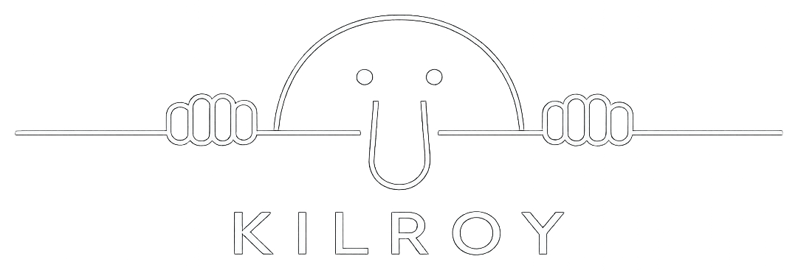

▲ パネル ▲
⏸
⟲
🎬
📁
✕
速度
0.25x
0.5x
1x
2x
4x
8x
16x
24x
32x
48x
64x
追いかける
向きを回す
ピンを出す
写真を出す
保存先
中の固定ポイントも自分の固定ポイントとして保存
一覧に戻る
キャンセル
保存
📡 GPS待機中
🗺️
地図の種類
標準
航空写真
地形
地図の見た目
店などを消す
文字を消す
▶ ルート再生
表示
渋滞
公共交通機関
自転車
写真
地図に写真を出さない
ルート上の写真だけ出す
全部の写真を出す
到達したら写真を出す（再生・録画・ナビ）
▼
パネルを閉じる
▼
次のポイントへ
—
km
検索
✏️ 編集
▶ ナビ開始
🔄 復路
💾 保存
📂 マイリスト
👥 フォロー
👤 ログイン
🗑
◀
ポイントがありません
住所検索かタップで追加
▶
広告
ユーザー設定
メールアドレス
ユーザー名（英数字とアンダーバー）
保存
移動手段ごとの線（色と種類）
全部もとに戻す
プロフィール画像
👤
画像を選ぶ
戻す
現在位置のアイコン（この端末・このアカウントだけ・透過画像OK）
🔵
画像を選ぶ
戻す
言語
新しいパスワード
パスワードを変更
プライバシーポリシー
利用規約
使い方
キャンセル
ログアウト
🗺 マイナビ
ルートを保存するにはログインが必要です
ログイン
新規登録
ユーザー名
メールアドレス
パスワード
パスワードをお忘れですか？
ログイン
ログインせずに使う
パスワード再設定
メールアドレス
キャンセル
送信
新しいパスワード
パスワードを変更
ルートを保存
ルート名
フォルダ
公開範囲
キャンセル
保存
フォロー
✕
検索
フォロー中
フォロワー
検索
✕
区間の設定
移動手段
線の色
線の種類
この区間の道を引き直す
キャンセル
保存
マイリスト
✕
ルート
固定ポイント
みんな
＋ フォルダ
☑ 選択
全選択
解除
🗑
ポイント名
メモ
⭐ 固定ポイントとして保存
ルート
⭐ 固定ポイント
ポイント名（省略OK）
メモ（曲がり方向など）
アイコン
⭐
▼
写真（1枚）
📷
画像を選ぶ
外す
フォルダ
公開範囲
ルート番号を付ける
ピンの色
移動手段
挿入位置
キャンセル
削除
追加